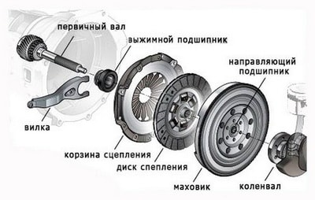
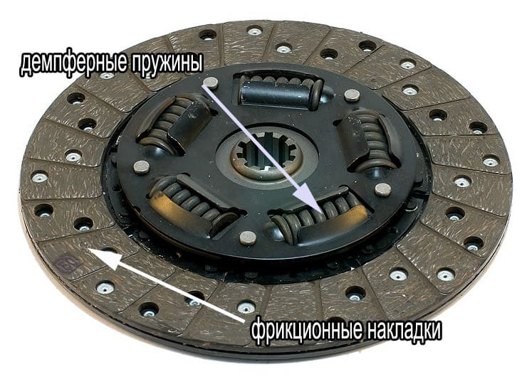

Ремонт и замена сцепления автомобилей в Минске с рассрочкой на СТО "КапеллаПлюс"
Диагностика неисправности сцепления
 Механизм сцепления автомобиля состоит:: из маховика, нажимного диска ("корзины") сцепления, диска сцепления и выжимного подшипника. Основная функция сцепления автомобиля заключается в кратковременном отсоединении двигателя от трансмиссии и последующем плавном их соединении при переключении передач посредством нажатия педали сцепления. Устройство сцепления автомобиля представлено на рисунке. Ось первичного вала коробки передач проходит внутри нажимного диска (корзины сцепления), которая соединяется с маховиком, являющимся частью двигателя. На ней крепится ведомый диск сцепления с расположенными на нем фрикционами – специальными накладками, которые обеспечивают повышенную силу трения. В состав ведомого диска входят специальные, расположенные по кругу, демпферные пружины, которые служат для сглаживания рывков при включении сцепления. В центре ведомого диска находится специальное шлицевое соединение, которым диск крепится к КПП. На первичный вал коробки передач установлен выжимной подшипник. В обычном состоянии пружины, расположенные в корзине, поджимают ведомый диск к поверхности маховика. Благодаря высокому трению фрикционов, ведомый диск крутится вместе с маховиком и передает вращение на КПП. При нажатой педали сцепления, выжимной подшипник отжимает ведомый диск от маховика и отключает двигатель от трансмиссии, позволяя переключать передачи коробки.
От нашей манеры езды напрямую зависит насколько долго проживет сцепление нашего автомобиля. Если у Вас агрессивный стиль вождения и, как следствие, резкие и частые нажатия на педаль сцепления при переключении передач, то будьте готовы к скорым неполадкам в работе сцепления и его ремонту. Если Вы хотите долгой жизни своего сцепления, то сцепление надо выжимать плавно и так же плавно его отпускать, не стоять на перекрестках с выжатой педалью сцепления, и конечно не двигаться продолжительное время с выжатым сцеплением. Комплект сцепления, как и его ремонт, вещь достаточно дорогая, поэтому есть смысл его поберечь.
Но рано или поздно сцепление приходится менять или ремонтировать. Многие знают как определить, что пришла пора ремонта сцепления автомобиля. Как правило, неисправность сцепления характеризуется затрудненным включением передач на работающем двигателе, шумом и треском при переключении передачи, а также увеличением свободного хода педали сцепления. Также могут наблюдаться рывки и вибрация при включении сцепления. Замену сцепления можно производить комплектом или по отдельным его частям. При процедуре замены любой части сцепления предшествует снятие коробки передач и демонтаж некоторых узлов. Работа по замене отдельных частей сцепления, будь то корзина или диск сцепления, выжимной подшипник или маховик, будет стоить столько же сколько и замена всего комплекта сцепления, так как проделанная работа по замене любой части сцепления в принципе равнозначна. Поэтому многие предпочитают производить замену всего комплекта чтобы не было обидно, если вдруг через некоторое время после замены одной части сцепления выйдет из строя другая и придется понести опять те же расходы на замену другой части сцепления. Срок службы отдельных частей сцепления мало отличается друг от друга, и если износился, к примеру, диск сцепления, то наверняка на подходе и другие его части. Поэтому, как правило, лучше менять весь комплект сцепления.
Цены на замену сцепления
Мы осуществляем ремонт или замену комплекта сцепления и отдельных его частей всех легковых автомобилей, минивэнов и микроавтобусов с возможностью оплаты в рассрочку. Помимо этого мы выполняем работы по замене масла КПП, замену коробки целиком, а также ремонт механизма педали сцепления.
Цена на работы по замене и ремонту сцепления у нас на СТО в Минске начинается от 130 руб. и может достигать суммы в 250 руб. в зависимости от модели Вашего автомобиля.
Узнать точную цену услуг по замене или ремонту сцепления для именно Вашей модели автомобиля Вы можете отправив свой запрос по форме внизу. Продолжительность работ по замене сцепления обычно не превышает 4-5 часов при наличии всех необходимых запасных частей.
Мы можем самостоятельно приобрести комплект сцепления или отдельные его части для замены. Обратите внимание! Оплачивая работы по замене или ремонту сцепления картой рассрочки, Вы оплачиваете работы по замене или ремонту сцепления с учетом материалов в РАССРОЧКУ! И это действительно ВЫГОДНО! При этом цена работ при оплате в рассрочку не изменяется!
На ВСЕ РАБОТЫ, выполняемые у нас на СТО в Минске, для держателей карт рассрочки "Карта покупок", "Карта FUN", "SMART Карта" или "МАГНИТ" действует РАССРОЧКА на 6 месяцев. Цены на услуги при оплате в рассрочку не меняются. Мы предоставляем ЧЕСТНУЮ рассрочку на оплату стоимости наших услуг без скрытых комиссий и двойных цен. Если у Вас нет карты рассрочки, то оформить их можно через интернет в кратчайшие сроки без особых проблем. Ссылки на страницы банков для оформления карт рассрочки Вы найдете на главной странице нашего сайта здесь.
На ремонт и замену сцепления мы предоставляем ОФИЦИАЛЬНУЮ ГАРАНТИЮ. Но даже по ее истечении мы не бросаем своих клиентов и, если гарантийный случай наступил не в результате естественного износа, а по нашей вине, то мы исправим и заменим вышедшие из строя части за свой счет. ВНИМАНИЕ!!! Мы предоставляем гарантию только на услуги по ремонту автомобилей. Гарантия на запчасти устанавливается продавцом или изготовителем запчастей отдельно. В любом случае, мы всегда найдем компромис в решении проблемы.
Если наступила пора заменить сцепление в Вашем автомобиле или произвести его ремонт, то Вы можете узнать цену на работы по замене или ремонту сцепления или другой услуги по ремонту авто на нашей СТО в Минске, оставить заявку или задать иной вопрос мастеру на +375 (29) 627-49-07 или оставьте свой номер телефона в поле внизу, и, как только мастер освободится, он перезвонит Вам, ответит на все Ваши вопросы, озвучит цену и запишет на диагностику, ремонт или замену сцепления в удобное для Вас время.